vignettes/mverse_intro_regressionmodelling.Rmd
mverse_intro_regressionmodelling.RmdThis vignette describes the workflow of linear regression modeling in the multiverse with the following functions:
formula_branch(), add_formula_branch: create branches for regression formulas and add them to a mverse object.lm_mverse(): fit a simple linear model with the given formula branches and family branches.summary(): provide a summary of the fitted models in different branches.spec_curve(): display the specification curve of a model.We will use the Boston housing dataset {Harrison Jr and Rubinfeld (1978)} as an example. This dataset has 506 observations on 14 variables. This dataset is extensively used in regression analyses and algorithm benchmarks. The objective is to predict the median value of a home (medv) with the feature variables.
glimpse(MASS::Boston) # using kable for displaying data in html
## Rows: 506
## Columns: 14
## $ crim <dbl> 0.00632, 0.02731, 0.02729, 0.03237, 0.06905, 0.02985, 0.08829,…
## $ zn <dbl> 18.0, 0.0, 0.0, 0.0, 0.0, 0.0, 12.5, 12.5, 12.5, 12.5, 12.5, 1…
## $ indus <dbl> 2.31, 7.07, 7.07, 2.18, 2.18, 2.18, 7.87, 7.87, 7.87, 7.87, 7.…
## $ chas <int> 0, 0, 0, 0, 0, 0, 0, 0, 0, 0, 0, 0, 0, 0, 0, 0, 0, 0, 0, 0, 0,…
## $ nox <dbl> 0.538, 0.469, 0.469, 0.458, 0.458, 0.458, 0.524, 0.524, 0.524,…
## $ rm <dbl> 6.575, 6.421, 7.185, 6.998, 7.147, 6.430, 6.012, 6.172, 5.631,…
## $ age <dbl> 65.2, 78.9, 61.1, 45.8, 54.2, 58.7, 66.6, 96.1, 100.0, 85.9, 9…
## $ dis <dbl> 4.0900, 4.9671, 4.9671, 6.0622, 6.0622, 6.0622, 5.5605, 5.9505…
## $ rad <int> 1, 2, 2, 3, 3, 3, 5, 5, 5, 5, 5, 5, 5, 4, 4, 4, 4, 4, 4, 4, 4,…
## $ tax <dbl> 296, 242, 242, 222, 222, 222, 311, 311, 311, 311, 311, 311, 31…
## $ ptratio <dbl> 15.3, 17.8, 17.8, 18.7, 18.7, 18.7, 15.2, 15.2, 15.2, 15.2, 15…
## $ black <dbl> 396.90, 396.90, 392.83, 394.63, 396.90, 394.12, 395.60, 396.90…
## $ lstat <dbl> 4.98, 9.14, 4.03, 2.94, 5.33, 5.21, 12.43, 19.15, 29.93, 17.10…
## $ medv <dbl> 24.0, 21.6, 34.7, 33.4, 36.2, 28.7, 22.9, 27.1, 16.5, 18.9, 15…mverse
In order to perform a linear regression in the multiverse, we create a formula branch with all the models we wish to explore, add it the mverse object, and execute lm on each universe by calling lm_mverse.
Create a multiverse with mverse.
mv <- create_multiverse(MASS::Boston)We can explore models of the median value of home prices medv on different combinations of the following explanatory variables: proportion of adults without some high school education and proportion of male workers classified as laborers (lstat), average number of rooms per dwelling (rm), per capita crime rate (crim), and property tax (tax).
Create the models with formula_branch()
formulas <- formula_branch(medv ~ log(lstat) * rm,
medv ~ log(lstat) * tax,
medv ~ log(lstat) * tax * rm)Add the models to the multiverse mv.
mv <- mv %>% add_formula_branch(formulas)Fit lm() across mv using lm_mverse().
lm_mverse(mv)By default, summary will give the estimates of parameters for each model. You can also output other information by changing the output parameter.
summary(mv)
## # A tibble: 16 × 9
## universe formulas…¹ term estimate std.e…² stati…³ p.value conf.low conf.h…⁴
## <fct> <fct> <chr> <dbl> <dbl> <dbl> <dbl> <dbl> <dbl>
## 1 1 medv ~ lo… (Int… -2.49e+1 6.66e+0 -3.74 2.07e- 4 -3.80e+1 -1.18e+1
## 2 1 medv ~ lo… log(… 1.16e+1 2.61e+0 4.45 1.05e- 5 6.50e+0 1.68e+1
## 3 1 medv ~ lo… rm 1.10e+1 9.73e-1 11.3 2.08e-26 9.05e+0 1.29e+1
## 4 1 medv ~ lo… log(… -3.35e+0 4.05e-1 -8.29 1.04e-15 -4.15e+0 -2.56e+0
## 5 2 medv ~ lo… (Int… 4.62e+1 2.83e+0 16.3 1.89e-48 4.07e+1 5.18e+1
## 6 2 medv ~ lo… log(… -9.60e+0 1.15e+0 -8.31 9.04e-16 -1.19e+1 -7.33e+0
## 7 2 medv ~ lo… tax 1.35e-2 7.50e-3 1.80 7.23e- 2 -1.23e-3 2.82e-2
## 8 2 medv ~ lo… log(… -6.35e-3 2.78e-3 -2.28 2.29e- 2 -1.18e-2 -8.82e-4
## 9 3 medv ~ lo… (Int… -1.88e+2 1.54e+1 -12.2 3.36e-30 -2.18e+2 -1.57e+2
## 10 3 medv ~ lo… log(… 5.23e+1 6.70e+0 7.80 3.73e-14 3.91e+1 6.54e+1
## 11 3 medv ~ lo… tax 3.82e-1 3.44e-2 11.1 7.46e-26 3.15e-1 4.50e-1
## 12 3 medv ~ lo… rm 3.10e+1 2.30e+0 13.5 1.98e-35 2.65e+1 3.55e+1
## 13 3 medv ~ lo… log(… -1.00e-1 1.35e-2 -7.40 5.89e-13 -1.27e-1 -7.35e-2
## 14 3 medv ~ lo… log(… -7.30e+0 1.06e+0 -6.86 2.04e-11 -9.40e+0 -5.21e+0
## 15 3 medv ~ lo… tax:… -4.84e-2 5.29e-3 -9.16 1.32e-18 -5.88e-2 -3.80e-2
## 16 3 medv ~ lo… log(… 1.07e-2 2.16e-3 4.96 9.62e- 7 6.49e-3 1.50e-2
## # … with abbreviated variable names ¹formulas_branch, ²std.error, ³statistic,
## # ⁴conf.highChanging output to df yields the degrees of freedom table.
summary(mv, output = "df")
## # A tibble: 3 × 5
## universe formulas_branch p n.minus.p p.star
## <fct> <fct> <int> <int> <int>
## 1 1 medv ~ log(lstat) * rm 4 502 4
## 2 2 medv ~ log(lstat) * tax 4 502 4
## 3 3 medv ~ log(lstat) * tax * rm 8 498 8Other options include F (output = "f") statistics
summary(mv, output = "f")
## # A tibble: 3 × 5
## universe formulas_branch fstatistic numdf.f dendf.f
## <fct> <fct> <dbl> <dbl> <dbl>
## 1 1 medv ~ log(lstat) * rm 482. 3 502
## 2 2 medv ~ log(lstat) * tax 341. 3 502
## 3 3 medv ~ log(lstat) * tax * rm 368. 7 498and \(R^2\) (output = "r").
# output R-squared by `r.squared` or "r"
summary(mv, output = "r")
## # A tibble: 3 × 4
## universe formulas_branch r.squared adj.r.squared
## <fct> <fct> <dbl> <dbl>
## 1 1 medv ~ log(lstat) * rm 0.742 0.741
## 2 2 medv ~ log(lstat) * tax 0.671 0.669
## 3 3 medv ~ log(lstat) * tax * rm 0.838 0.836Finally, we can display how the effect of number of rooms in a dwelling log(lstat) using spec_curve.
spec_curve(mv, var = "log(lstat)") 
Harrison Jr, David, and Daniel L Rubinfeld. 1978. “Hedonic Prices and the Demand for Clean Air.” Journal of Environmental Economics and Management 5.